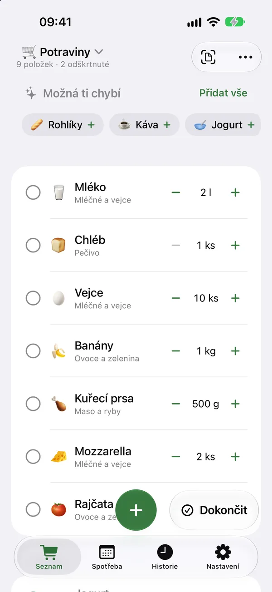
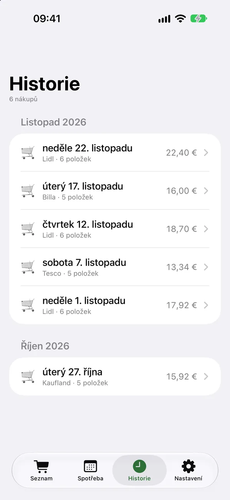
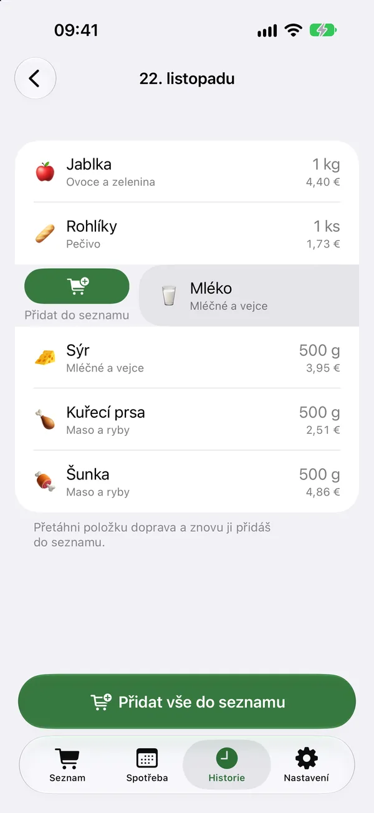

Jak dokončit nákup a najít ho v historii
-
Krok 1 Klepněte na Dokončit
Když máte odškrtnutou alespoň jednu položku, vpravo od tlačítka + se objeví Dokončit. Klepněte na něj a potvrďte Dokončit nákup. Odškrtnuté položky se uloží do historie a ze seznamu zmizí.

-
Krok 2 Otevřete Historii
V kartě Historie vidíte všechny nákupy s datem, obchodem a počtem položek.

-
Krok 3 Přidejte položku znovu
Otevřete nákup a položku přetáhněte doprava → Přidat do seznamu. Celý nákup najednou vrátíte tlačítkem Přidat vše do seznamu.

Časté otázky
Proč je důležité nákup dokončit?
Z dokončených nákupů se Shoppie učí, co a jak často kupujete, a podle toho navrhuje, co vám dochází.
Další otázky najdete na stránce Podpora.